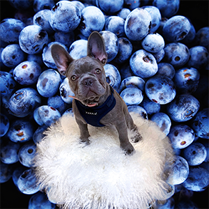
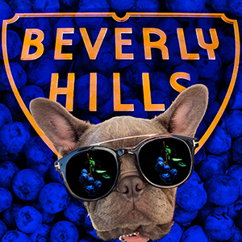
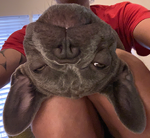

home
inspiration
top fives
my top 5's
top five favorite cities
new york
istanbul
rome
barcelona
panama city
five cities on my bucket list
lisbon, portugal
tokyo, japan
havana, cuba
cartagena, columbia
prague, czech republic
top five pics of blueberry


